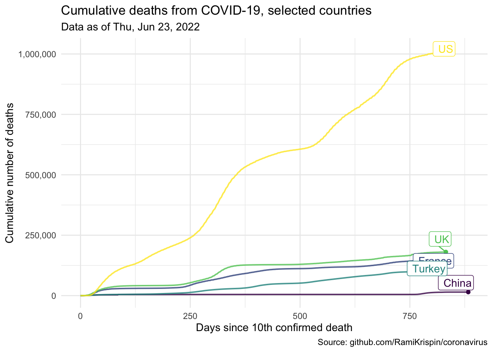

library(coronavirus) # devtools::install_github("RamiKrispin/coronavirus")
library(tidyverse)
library(lubridate)
library(glue)
library(scales)
library(ggrepel)
library(DT)Cumulative deaths from COVID-19
Introduction
Countries around the world are responding to an outbreak of respiratory illness caused by a novel coronavirus, COVID-19. The outbreak first started in Wuhan, China, but cases have been identified in a growing number of other locations internationally, including the United States. In this report we explore how the trajectory of the cumulative deaths in a number of countries.
The data come from the coronavirus package, which pulls data from the Johns Hopkins University Center for Systems Science and Engineering (JHU CCSE) Coronavirus repository. The coronavirus package provides a tidy format dataset of the 2019 Novel Coronavirus COVID-19 (2019-nCoV) epidemic. The package is available on GitHub here and is updated daily.
For our analysis, in addition to the coronavirus package, we will use the following packages for data wrangling and visualisation.
- tidyverse for data wrangling and visualization
- lubridate package for handling dates
- glue package for constructing text strings
- scales package for formatting axis labels
- ggrepel package for pretty printing of country labels
We will make use of the DT package for interactive display of tabular output in the Appendix.
Data prep
The data frame called coronavirus in the coronavirus package provides a daily summary of the Coronavirus (COVID-19) cases by country. Each row in the data frame represents a country (or, where relevant, state/province). A full list of the countries in the data frame is provided in the Appendix. Note that the data provided in this package provides daily number of deaths, confirmed cases, and recovered cases. For this report, we will focus on the deaths.
We will start by making our selection for the countries we want to explore.
countries <- c(
"China",
"France",
"United Kingdom",
"US",
"Turkey"
)In the following code chunk we filter the data frame for deaths in the countries we specified above and calculate cumulative number of deaths. We will only visualise data since 10th confirmed death.
country_data <- coronavirus %>%
# filter for deaths in countries of interest
filter(
type == "death",
country %in% countries
) %>%
# fix county labels for pretty plotting
mutate(
country = case_when(
country == "United Kingdom" ~ "UK",
TRUE ~ country
)
) %>%
# calculate number of total cases for each country and date
group_by(country, date) %>%
summarise(tot_cases = sum(cases)) %>%
# arrange by date in ascending order
arrange(date) %>%
# record daily cumulative cases as cumulative_cases
mutate(cumulative_cases = cumsum(tot_cases)) %>%
# only use days since the 10th confirmed death
filter(cumulative_cases > 9) %>%
# record days elapsed, end date, and end label
mutate(
days_elapsed = as.numeric(date - min(date)),
end_date = if_else(date == max(date), TRUE, FALSE),
end_label = if_else(end_date, country, NULL)
) %>%
# ungroup
ungroup()`summarise()` has grouped output by 'country'. You can override using the
`.groups` argument.We also need to take a note of the “as of date” for the data so that we can properly label our visualisation.
as_of_date <- country_data %>%
summarise(max(date)) %>%
pull()
as_of_date_formatted <- glue("{wday(as_of_date, label = TRUE)}, {month(as_of_date, label = TRUE)} {day(as_of_date)}, {year(as_of_date)}")These data are as of Thu, Jun 23, 2022.
Visualisation
The following visualisation shows the number of cumulative cases vs. days elapsed since the 10th confirmed death in each country. The time span plotted for each country varies since some countries started seeing (and reporting) deaths from COVID-19 much later than others.
ggplot(data = country_data,
mapping = aes(x = days_elapsed,
y = cumulative_cases,
color = country,
label = end_label)) +
# represent cumulative cases with lines
geom_line(size = 0.7, alpha = 0.8) +
# add points to line endings
geom_point(data = country_data %>% filter(end_date)) +
# add country labels, nudged above the lines
geom_label_repel(nudge_y = 1, direction = "y", hjust = 1) +
# turn off legend
guides(color = "none") +
# use pretty colors
scale_color_viridis_d() +
# better formatting for y-axis
scale_y_continuous(labels = label_comma()) +
# use minimal theme
theme_minimal() +
# customize labels
labs(
x = "Days since 10th confirmed death",
y = "Cumulative number of deaths",
title = "Cumulative deaths from COVID-19, selected countries",
subtitle = glue("Data as of", as_of_date_formatted, .sep = " "),
caption = "Source: github.com/RamiKrispin/coronavirus"
)
Appendix
A list of countries in the coronavirus data frame is provided below.